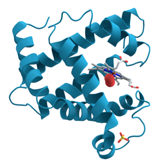

Proteins are large biomolecules and macromolecules that comprise one or more long chains of amino acid residues. Proteins perform a vast array of functions within organisms, including catalysing metabolic reactions, DNA replication, responding to stimuli, providing structure to cells and organisms, and transporting molecules from one location to another. Proteins differ from one another primarily in their sequence of amino acids, which is dictated by the nucleotide sequence of their genes, and which usually results in protein folding into a specific 3D structure that determines its activity.
A linear chain of amino acid residues is called a polypeptide. A protein contains at least one long polypeptide. Short polypeptides, containing less than 20–30 residues, are rarely considered to be proteins and are commonly called peptides, or sometimes oligopeptides. The individual amino acid residues are bonded together by peptide bonds and adjacent amino acid residues. The sequence of amino acid residues in a protein is defined by the sequence of a gene, which is encoded in the genetic code. In general, the genetic code specifies 20 standard amino acids; but in certain organisms the genetic code can include selenocysteine and—in certain archaea—pyrrolysine. Shortly after or even during synthesis, the residues in a protein are often chemically modified by post-translational modification, which alters the physical and chemical properties, folding, stability, activity, and ultimately, the function of the proteins. Some proteins have non-peptide groups attached, which can be called prosthetic groups or cofactors. Proteins can also work together to achieve a particular function, and they often associate to form stable protein complexes.
More info on proteins.